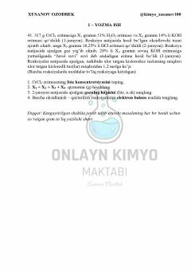

1IKimyo fanidan murakkab masalalar va reaksiya tenglamalari yechimlari to'plami.
Ushbu qo'llanma kimyo fanidan murakkab masalalar va organik reaksiya tenglamalarini o'z ichiga olgan yozma ish topshiriqlaridan iborat. Unda elektroliz, oksidlanish-qaytarilish reaksiyalari va kimyoviy muvozanatga oid nazariy hamda amaliy masalalar yoritilgan.